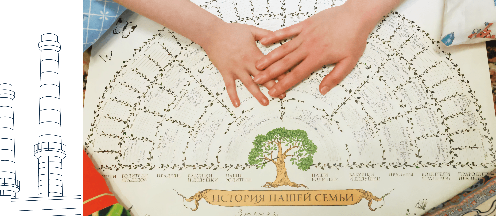
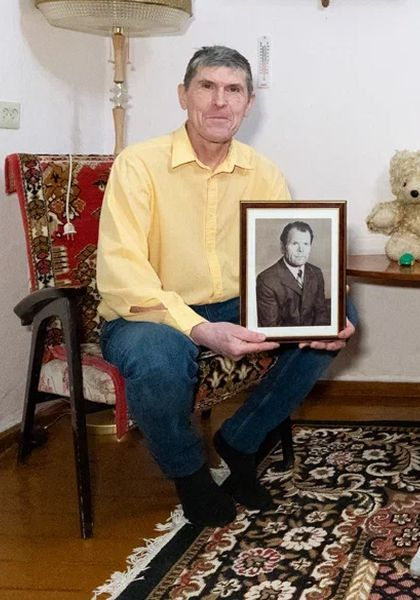

Династия Зюзёвых
Предисловие
Уральский писатель Павел Бажов в своих сказах описывал мифический народ, обитавший в окрестностях Полевского. «Какой веры-обычая и как прозывались, про то никто не знает. По лесам жили. Одним словом, стары люди...» Среди прочего их отличало глубокое знание горного дела. По версии Бажова, легенды о чуди (другое название «старых людей») потому здесь так долго и ходили, что Полевской завод строился на месте древних чудских рудокопен.
Если диковинный народ и правда жил в этих краях, то уже давно их покинул. А завод остался. И работают на нем не менее удивительные люди.
Наши герои — семья Зюзёвых, выходцы из одной из старейших трудовых династий Северского трубного завода (СТЗ), который входит в Трубную Металлургическую Компанию (ТМК). Ее летопись ведется на протяжении уже пяти поколений. Общий трудовой стаж работников — более 800 лет.
Александр и Алексей Михайлович Зюзёвы из третьего поколения династии — центральные фигуры в ее истории. Братья всю жизнь проработали на СТЗ, участвовали в запуске основных цехов завода, организовали беговое движение на предприятии и в городе. Семейные традиции — заботиться о родных, заниматься спортом, интересоваться историей рода и края — они если не заложили, то точно приумножили. Братьев уже нет в живых, но Александр и Алексей словно незримо присутствуют в жизни завода, города и своей семьи. Им посвящены отдельные главы.



Валерий Александрович ЗюзёвТатьяна Алексеевна Фоминых (в девичестве Зюзёва) отдала заводу 25 лет. В династии именно она отвечает за сохранение истории семьи и спортивные традиции. Ее двоюродный брат Валерий Александрович Зюзёв обладает самым большим стажем из ныне живущих Зюзёвых и по-прежнему трудится в заводском цеху. Александра, дочь Валерия, представляет на СТЗ пятое поколение. Сейчас она в декрете и воспитывает дочку, возможно, будущую продолжательницу трудовой династии.
Еще один рассказчик — младший брат Александра и Алексея, профессор кафедры электропривода и автоматизации промышленных установок Уральского федерального университета (УрФУ) — Анатолий Михайлович Зюзёв. Живой представитель третьего поколения династии, он никогда не работал на СТЗ, но студенческую практику проходил именно на заводе. Кроме того, под его непосредственным руководством высшее образование по специальности, востребованной на СТЗ, получали Валерий Александрович и Александра Зюзёвы.
История трудовой династии Зюзёвых сама по себе похожа на сказ. Среди его действующих лиц — сильные духом рабочие, которые не чурались тяжелой работы и доводили любое начинание до конца. Простые люди, которые могли безо всяких сапогов-скороходов земной шар обежать. Знатоки своего дела и мастера на все руки. Женщины в династии Зюзёвых словно сошли со страниц русских сказок. Ни в чем мужчинам не уступают, а в чем-то даже превосходят. Хранительницы очага и оплот семьи, но, если понадобится — и на гору взойдут, и со сложной техникой разберутся.
В то же время это скромные люди со своими переживаниями, заботами и увлечениями. Но лучше пусть они расскажут о себе сами.
 Описание фотографии
Описание фотографии
Истоки. От золота
к металлургии
История династии берет начало в селе Косой Брод, что недалеко от Полевского. Основано оно было в 1723 году, о чем свидетельствует обелиск, установленный, к слову, по инициативе представителя рода Зюзёвых, Николая Федоровича.
Косой Брод — место бажовских сказов. Именно здесь разворачивались события ряда произведений писателя. «Жил тут старатель один, Никита Жабрей прозывался, — писал Бажов в сказе „Жабреев ходок“. — Этот Жабрей в одиночку больше старался, места новые искал и, случалось, находил. Придёт тогда в деревню и сам скажет: — Вот, мужики, там-то попадать золотишко стало. И верно, стараться можно».
В реальности кособродцы Жабрею не уступали. В 1935 году село прославилось на весь мир: здесь обнаружили гигантский 13-килограммовый золотой самородок «Лосиное ухо». Похоже, занимались золотодобычей в Косом Броду и Зюзёвы...


 Татьяна
Татьяна Фоминых
Первым поселенцем Косого Брода был Михайло Зюзев 1676 года рождения. Он приехал сюда из Центральной России, как и многие крестьяне, которые бежали в поисках лучшей жизни. Это удалось установить Николаю Федоровичу Зюзеву, моему дяде по материнской линии. Мама в девичестве тоже Зюзевой была. Николай Федорович, как военный, имел упрощенный доступ к архивам. На основе своих изысканий он написал две книги. Одна из них — «Заметки по истории Полевского района». Ее он напечатал на машинке, сделал несколько экземпляров, который раздал в краеведческий музей Полевского, музей Косого Брода, а также сестрам и братьям. Таким образом эта книга оказалась у мамы. По маминой инициативе мы ее переиздали. А еще есть «История Косого Брода», никогда не переиздававшаяся. В ней — родословное древо Зюзевых, но без папиной ветки. Сейчас нахожу захоронения предков по папиной линии. Плиты там старые-старые, и написано на них по-старинному. Например, отец моего прадедушки там «Михайло Васильевич Зузев».
 Анатолий
Анатолий Зюзёв
У меня в памяти два реальных подтверждения, что там что-то было. В огороде на заднем дворе родительского дома у нас лежала так называемая бутара. Это инструмент для промывки песка. В ней ничего хитрого: это три доски, сколоченные в виде лотка. Сам лоток широкий. Эта бутара при сносе дома была взята братом Алексеем, Таниным отцом, и отдана мне на сохранение как память.
Вторая деталь — цельнотянутые кожаные сапоги. Есть фотография, на которой в них запечатлен дед с еще молодым нашим отцом, совсем мальчишкой. Эти сапоги сделаны из одного куска кожи, с кожаной подошвой и подбиты деревянными гвоздиками. А самое интересное в них то, что, по рассказам то ли матери, то ли братьев, куплены они были в магазине «Концессия», в котором торговали на «золото». То есть не за деньги были куплены эти сапоги.
С одной стороны, если в нашей семье золотодобычей и занимались, то особого богатства, я так понимаю, она не принесла. С другой, отцовский дом на улице был самый заметный. И вот я сейчас думаю: на какие такие средства отцу удалось этот дом поставить?
Еще один интересный момент. Есть у меня в Полевском знакомый журналист. Он рассказывал, как приехал молодым в наши места и расспрашивал местных о здешних жителях. Так вот, оказывается, тогда ходили байки о Зюзевых, у которых золото припрятано.
Татьяна Фоминых
В архиве я заказала дела родственников, о которых уже некого спросить. Получила дела прадеда Николая Михайловича и его сына Михаила — моего деда. Николай — основатель нашей трудовой династии. В карточке значится только, что работал он на конном дворе при заводе, а потом в горном цехе. Лошадей с конного двора брали, чтобы возить на завод руду. Возили с Осиновского рудника. Ведет туда Осиновская дорога. По ней дед Николай и ездил. Помню, как впервые побывала на том руднике с экскурсией. Когда спустилась в яму, увидела куски породы, отколотые рабочими — это было сильное впечатление. Про Михаила Николаевича известно больше. В 1929 году он зажигал первую мартеновскую печь на заводе. Папа со слов бабушки рассказывал, как это было. Михаил Николаевич с горящим факелом подошел к окну печи, где лежала груда сухих дров. Он зажег их и, открыв вентиль, подал туда генераторный газ. Все вспыхнуло — зрелище было великолепное.
Еще будучи школьниками, в годы войны на завод устроились работать и сыновья Михаила — Александр и Алексей.


Александр Михайлович Зюзёв. «Он был настоящим спортсменом. Сильным и выносливым»
 Валерий Александрович Зюзёв
Валерий Александрович Зюзёв
Дата рождения: 26.08.1926. Образование — УПИ (Уральский политехнический институт, ныне УрФУ — Уральский федеральный университет), электрофак. Общий стаж работы — более 40 лет (1940-е — 80-е гг.) Начинал электриком в сутуночном цехе, был помощником начальника цеха по энергооборудованию в Трубопрокатных цехах № 1 (ТПЦ-1), № 2 (ТПЦ-2) и № 3 (ТПЦ-3), работал начальником участка автоматики Трубоэлектросварочного цеха № 2 (ТЭСЦ-2). Вместе с братом Алексеем — организатор бегового движения на СТЗ.
В одном из интервью Александр Михайлович делился мыслями: «Властям говорю: „Это же не нам, а городу надо! Мы-то можем в лесу или в парке бегать. А когда по улицам — и люди посмотрят и детишкам скажут: вот, мол, какие еще чудаки есть... уже хорошо“. Я все время думал, отчего наши люди такие ленивые. Ведь будь возле каждого дома спортплощадка, все равно не станут заниматься. А я сделал у себя в цехе тренажерный зал и пошли».
 Валерий
Валерий Зюзёв
Отец был постоянно в работе или занимался организацией различных мероприятий. То субботник надо провести, то картошку убрать — на полях или у себя. Папа всегда при деле был. Такая привычка со времен войны. Он ведь даже во время учебы в институте работал. У него бригада была на Комсомольской, там склад находился. Вагоны приходили, и они их разгружали.
Одно время папа болел сильно, со спиной лежал. Это когда они новые цеха строить начали: первый цех (Трубоэлектросварочный цех № 2), затем второй (Трубопрокатный цех № 1)... Тогда холодина была. А работы на улице шли. Ветер, снег. Постоянно чего-нибудь не хватало: людей, оборудования, материалов. Потом отец стал заниматься, бегать и уже держал себя в рабочей, так сказать, форме.
Татьяна Фоминых
Александр Михайлович у себя в цеху и тренажерный зал организовал, которого до этого не было.
Валерий Зюзёв
Когда отец начал заниматься организацией пробегов, завод был не против поспособствовать. Давали автобус для сопровождения, договаривались, чтобы перекрыли дорогу. Сегодня, кажется, такое уже невозможно. Сейчас эти забеги перешли в коммерческую плоскость: специальные люди с оборудованием и секундомерами приезжают. А тогда бегали сами, ногами замеряли или беговым колесом.
Пробеги очень массовые получались, много молодежи участвовало. Отцу все это интересно было. Алексей Михайлович потом к брату примкнул. Усилители, микрофон им на заводе выдали. Обрастали техникой потихоньку. Папа со вторым аккумулятором на машине ездил. Сейчас никого этим не удивишь, а тогда нужно было динамики поставить, чтобы музыку дать, объявление сделать и награждение провести. Так все и начиналось. Потом пробегов много стало, сами придумывали поводы. В беговом клубе вели дневник: кто сколько пробежал. Думаю, оттуда пошла у отца привычка в дневнике все фиксировать.
 Александра
Александра Зюзёва
Дедушка, я точно знаю, вел спортивный дневник. Он каждый день записывал буквально все: сколько отжиманий сделано, сколько взмахов руками. Сколько пробежал...
Валерий Зюзёв
Гимнастикой 15 минут позанимались — записал. Картошку убирали — три ведра опустили в погреб...
Александра Зюзёва
Помню, за новогодним столом он всегда просил минуточку внимания и перечислял, что в уходящем году было сделано.
Валерий Зюзёв
Кстати, знаете, какая окружность у земного шара? Больше 40 тысяч километров. Папа за 30 лет, можно сказать, обежал вокруг земли.
Татьяна Фоминых
Это хорошо ты, Валера, вспомнил. У Александра Михайловича в дневнике схемы есть, где он по годам складывал количество километров, которые пробежал. Вот и получился экватор.
Александра Зюзёва
Дедушка — подлинный спортсмен. Люди протеины пьют, чтобы какие-то результаты показывать или просто спортивно выглядеть. А силы в них нет. Вот кто действительно сильным был, так это дед. Сильным и выносливым. Таких я больше не встречала. И рукопожатие у него было стальное.
Валерий Зюзёв
Дедушка — подлинный спортсмен. Люди протеины пьют, чтобы какие-то результаты показывать или просто спортивно выглядеть. А силы в них нет. Вот кто действительно сильным был, так это дед. Сильным и выносливым. Таких я больше не встречала. И рукопожатие у него было стальное.
Александра Зюзёва
Можно сказать, от дедушки и пошли занятия спортом в нашей семье. Дед на тех же лыжах далеко ходил. Это мы только до Теплого озера: прогулка на пять километров. Халтурщики. А он на 50 км зимой ходил. С братом могли на весь день уйти: рано утром выезжали, возвращались уже к полуночи. А иной раз и на два-три дня уходили с ночевкой. Слышала, что и лыжи ломали, а потом полпути обратно пешком шли. Бывало, еще с дядей Алешей спорили, когда выходить, куда. Потом друг друга искали, возвращались в разное время.
Я застала дедушку, когда он на заводе уже не работал. Его всегда можно было найти в саду. Подбить грядки, разнести землю и другие такие мужские дела — все на нем. Помню, однажды мне говорит: «Саша, надо в доме прибраться». Я как-то без энтузиазма к этому призыву отнеслась. Тогда он сам убрался, развесил все так, как считал нужным: плакаты, памятные вещи. Организованный очень был. Зимой, если едем на лыжах, все фиксировал: во сколько ушли, во сколько вернулись, сколько раз падали. Когда в гости приходил, всегда приносил нам с сестрой фрукты. Почему-то бананы запомнились.
Нас, внучек, дедушка баловал. Вот поранился он как-то в саду, а я ему говорю: «Дедушка, давай я буду тебя лечить?» — «Давай». Приносила ему перекись и бинт, все обрабатывала. Может, на самом деле там просто царапина была. Теперь понимаю, что он, наверное, меня таким образом поддерживал в стремлении кому-нибудь помочь.
Валерий Зюзёв
У отца очень красивый почерк был. Вот у меня никакой, а он красиво писал. Это меня всегда цепляло. Да и словом владел мастерски. В детстве он много читал, думаю, это все оттуда.
Анатолий Зюзёв
Александр Михайлович, насколько я знаю, в школу сразу во второй класс пошел. Ни разу не слышал о том, кто его научил грамоте так, чтобы он со второго класса учебу начал. А ведь грамотность у него безупречная была. Кто-то с ним занимался. Вряд ли мама или отец. Думаю, это заслуга деда с бабкой.
Александра Зюзёва
Вообще-то, дедушка — это не только про технику и бег. У современного поколения есть проблемы с выражением своих мыслей на бумаге. Я по себе это знаю, для меня это мука. А дед писал красиво и складно. По-моему, он даже начал книгу о себе и родственниках. И еще мне говорил: «Саша, дополнишь потом». Я тогда к этому не очень серьезно отнеслась, а сейчас думаю, что все-таки стоит вести записи хотя бы каких-то значимых событий.
Татьяна Фоминых
Александр Михайлович историей завода и города интересовался. Уже не работал, но имел пропуск на завод, чтобы беспрепятственно ходить в музей. Так, в архивах он обнаружил и первым обратил внимание на фото ажурной часовни, которую в советское время разобрали. Ее потом восстановили, а завод взял ее под свою опеку. Мне это подтвердила и корреспондент «Северского рабочего», Маргарита Гундина. Сотрудники музея тоже не спорят с тем, что именно Александр Михайлович обратил внимание на фотографию, по которой восстанавливали часовню.
Валерий Зюзёв
У отца вырезки на разные темы были, он многим интересовался. В «Рабочей правде» писали, как на 130-летие Павла Бажова он принес в редакцию целую подборку статей из местной и областной прессы, посвященных наследию писателя. Даже это его волновало..
Татьяна Фоминых
Папа вместе с Александром Михайловичем каждый год в день рождения Бажова проводили пробеги. А пробег «Сказы Бажова», который они вместе организовали, проходит летом до сих пор.
Алексей Михайлович Зюзёв. «Он везде успевал»
 Валерий Александрович Зюзёв
Валерий Александрович Зюзёв
Дата рождения: 04.09.1928. Трудовой стаж на СТЗ — около 58 лет. На заводе начал работать с 1943 года электрослесарем. С 1952 года (после службы в армии) работал электриком на газогенераторной станции. С 1962 года — мастер-электрик в пусковой группе строящегося Трубоэлектросварочного цеха № 2 (ТЭСЦ-2). С 1964 года — старший мастер машинных залов и электроснабжения ТЭСЦ-2. После выхода на заслуженный отдых в 1998 году был снова приглашен в ТЭСЦ-2 для пуска нового стана. Кавалер ордена «Знак почета» за участие в пуске ТЭСЦ-2. Почетный ветеран Полевского городского округа.
Считал, что принял огненную эстафету от отца: участвовал в запуске третьей и четвертой мартеновских печей. Вместе с братом был организатором бегового движения на СТЗ.
«Мне приятно сознавать, что я был свидетелем и очевидцем пуска третьей и четвертой мартеновских печей, лудильно-оцинковального цеха, новосутуночного стана, трубного цеха. Вместе с ростом завода вырос и я», — в одной из своих заметок писал Алексей Михайлович, работавший внештатным корреспондентом в «Рабочей правде» и «Северском рабочем».
Татьяна Фоминых
Я с самого начала знала, что пойду на завод. Училась по специальности «химик» и понимала, что на заводе будут подходящие вакансии. Других альтернатив не видела. Мама у меня медик, но этот путь не увлек, даже не рассматривала такой вариант.
Устроилась на заводе в лабораторию. Там меня очень приветливые люди встретили. Помню, женщина, которая вышла ко мне, говорит: «А я твоего папу знаю. Его тут все знают. Раз ты дочь Алексея Михайловича, значит, приживешься у нас, значит, ты наша». И у меня все время было это чувство ответственности, что я должна работать не хуже папы, держать марку.
За время работы на СТЗ довелось руководить лабораторией фасонно-литейного цеха, группой химической лаборатории. Работала в лаборатории Трубоэлектросварочного цеха № 2 (ТЭСЦ-2), еще была лаборатория, которая обслуживала мартеновский цех. Ситуации всякие возникали. Одних нужно уговорить, других убедить. Трудно приходилось. Бывали и обиды, и недопонимание. Такая хорошая школа жизни.
Когда меня выбрали председателем цехового комитета, помимо основной работы появилась общественная. Стало интереснее. Думаю, тогда я и научилась собирать людей, говорить с ними не только по рабочим вопросам, но и по профсоюзным делам. То надо концерт организовать, то кого-то на лечение отправить, кому-то путевку найти. Интересно было.
Анатолий Зюзёв
У Алексея Михайловича круг общения был широчайший. Думаю, Таня, глядя на отца, еще с детства усвоила: надо быть коммуникабельной.
Валерий Зюзёв
Таня очень активная, умеет добиваться своего. Если надо организовать людей, она организует. Кстати, отец с дядей Алешей также это умели. Надо провести мероприятие или собрать людей — пожалуйста, они это делали. Не каждому дан такой талант. Мне, например, это не под силу. Надо ведь со всеми поговорить, кого-то убедить, с кем-то договориться. Таня это умеет. А еще она очень целеустремленная.

 Татьяна
Татьяна Фоминых
Когда появился электросталеплавильный цех, старая кислородная станция стала не нужна. Ее закрыли, а за ней и лабораторию, где я работала. При этом открыли новый кислородный цех, который давал мощные объемы для печи ковша. И не было специалистов для работы в новой лаборатории. Меня тогда очень уговаривали: «Ты же знаешь эту работу, давай, переходи!» Но это уже не на СТЗ было. То есть, меня звали работать для завода, но хозяева предприятия находились уже в Москве. Это был трудный момент для меня. И если бы не одобрение папы, который других мест работы не признавал, я бы не перешла, наверное. Со слезами шаг давался. Все-таки 25 лет на заводе проработала.
Сейчас я официально — ветеран СТЗ. Состою в ветеранской организации завода. От совета участвую в разных мероприятиях. Лыжные гонки, кроссы — везде выступаю за ветеранов СТЗ и горжусь этим.
Я с детства занималась спортом, ходила в лыжную секцию. Но к тому, чтобы участвовать в пробегах с отцом, кажется, пришла сама. Папа никогда не тянул. Лишь потом, когда он стал участвовать только в небольших местных пробегах, что-то меня туда привело. Наверное, хотелось отца поддержать. Помню, он дома обсуждал: мол, этот не сможет, тот не придет — участников получится меньше, чем рассчитывал. И я понимала: нужна моя поддержка, тем более силы и возможности были. Так потихонечку и втянулась, а теперь остановиться не могу.
Самым сложным, наверное, был горный 42-километровый марафон «Конжак» в 2010 году. Очень трудно пришлось, но понравилось. О «Конжаке» узнала от участницы Бажовского пробега, приехавшей из другого города. Она описала тамошние красоты, плюсы организации. Я и загорелась. Пробежала, получила медаль, очень гордилась. Через несколько лет повторила забег.
Еще был лыжный марафон «Европа-Азия» — из Первоуральска в Екатеринбург. С 2010 года трижды пробежала там по 50 км. В рамках того же марафона бегала в разные годы по 15, 35 и 37 км. Честно говоря, сама не знала, что на такое способна. Но спортсмены из папиного окружения заставили поверить в себя. Мол, видим, что можешь. Ну я и поддалась. У меня тогда дочка Марина серьезно лыжами занималась, помогала готовить снаряжение, а завод помог с транспортом.
У меня всегда был девиз — дорогу осилит идущий. И еще — нельзя останавливаться. Пока двигаешься — это всегда дорога вверх.
Туризм и походы впитала с детства. Часто собирались в походы целыми трудовыми семьями. Медянцевы, Зюзёвы, еще две-три фамилии. Это были «походные» семьи: папа организовывал своих друзей, работников завода, и мы ходили по местным маршрутам с ночевкой в избушках. Такое походное детство у нас было. С тех пор мы все дружим. Помню, как однажды пошли в поход, взяли все для готовки пельменей, а муку не взяли. Что делать? Макароны растолкли, пельмени налепили, выставили на улицу, чтобы они заморозились. Через какое-то время выходим, а все пельмени собаки съели. Такая вот история.
Помню заводской турслет, когда все только начиналось. Это конец 60-х — начало 70-х. В нашей команде были работники со своими детьми, поэтому папа нас так и назвал — «Отцы и дети». Делали юбочки и шапочки из папоротника — получались такие папуасики.
Сейчас уже более десяти лет занимаюсь организацией заводских турслетов. На них соревнуются команды цехов. Результаты идут в зачет заводской Спартакиады. Еще вхожу в заводской турклуб «Малахит». Выезжаем в походы, сплавляемся по рекам. В 2022 году была в составе команды, которая участвовала в чемпионате России по походам высшей категории.


 Александра
Александра Зюзёва
Как-то Татьяна пригласила в поход. Говорит: «Саша, будет очень тепло, не переживай, ночевать в тепле будем». Выехали утром — минус 35. Снега по колено, «тепло». Хорошо еще ветра не было. Пришли в дом, он, конечно, топится. Уже не минус 35, даже какой-то плюс, но я-то люблю, чтобы плюс 30 было. Вот такое путешествие. В новогодние каникулы — в гору. Но было очень красиво, когда на вершину поднялись. Облака отсутствовали, видимость идеальная. В итоге ничуть не пожалела, что пошла.
Или вот еще история. Наступает 1 января. Все спят, а мы на лыжах. Смотрим, еще кто-то на лыжах идет, с двумя детьми. Думаем: интересно, кто такие? 1 января спозаранку, да еще с детьми, ну прямо как мы. Смотрим, это ж наши! Тетя Таня, с детьми и внуками.
Татьяна Фоминых
Историей семьи я начала интересоваться вот как. Лет 10-15 назад позвонил мне мужчина. Знаете, говорит, а я ваш родственник. Отправил древо своего рода: мол, посмотрите, увидите там и своих родных. Смотрю, и правда — там бабушки мои, родня разная. Интересно стало. А он продолжает: давай вместе древо вести. Ты добавишь своих, о которых у меня нет сведений. Так мы и подружились. Он мне помог специальную программку на компьютер установить, объяснял, какие вопросы надо задавать, на что обращать внимание, какие фотографии спрашивать. Этого человека зовут Юрий Бибиков, он раньше работал замом главного бухгалтера на Северском трубном заводе.
Рада, что успела еще при жизни отца составить большое генеалогическое древо, причем не только тех, кто работал на заводе, но и других родственников.
«Место силы»
Сравнение истории семьи Зюзёвых со сказом неслучайно. В Полевском и его окрестностях много мест, которые описываются в сказах Бажова. Одно из них — Азов-гора. Если верить сказу «Дорогое имячко», именно на Азов-горе сокрыта пещера, в которой девушка неописуемой красоты оплакивает своего возлюбленного, а вокруг — несметные сокровища. И попасть внутрь можно, лишь назвав то самое дорогое имячко. Пока это никому не удавалось.
Азов-гора — знаковое место для Зюзёвых после Северского трубного завода. Здесь они регулярно отмечают важнейшие семейные праздники.
 Описание фотографии
Татьяна
Описание фотографии
Татьяна Фоминых
Вот откуда Павел Петрович Бажов взял свои истории? Его детство прошло в Полевском. Отец работал на металлургическом заводике, а их дом стоял около Думной горы. Там сторож работал, звали его дедушка Слыш-ко, по фразе, которую он любил произносить. Местная ребятня к нему бегала слушать разные истории про мастеров. И Бажов бегал. Вот все эти истории у него в копилочку и складывались.
Здесь в Полевском много бажовских мест. Одно из главных — Азов-гора. Это наше любимое место. Праздники, важные семейные даты всегда отмечаем у подножья Азов-горы. Там и стол большой, где можно чай попить. Особенно на Азов-горе красиво осенью.
Александра Зюзёва
Семейная традиция такая сильная, что и маленьких детей с собой на Азов-гору берем. Даже мы с дочкой Женей, насколько позволяла дорога, на колясочке туда заезжали. Хотя Жене еще и годика не исполнилось.


 Татьяна
Татьяна Фоминых
Как-то идем мы с внуком на Азов-гору, а ему тогда лет 6-7 было. Рассказываю ему: дескать, есть там таинственная пещера и никто не может попасть внутрь. А в ней, говорят, сокровища. Чтобы попасть внутрь, нужно некое заветное слово произнести. Дорогое имячко. Давай, говорю, попробуем, вдруг у нас получится. Ну вот, что мы ни говорили, какое слово ни называли, не открылась нам пещера.
Или вот другой случай. Приезжали к нам москвичи, и был у них ребенок, который ни за что не хотел на гору подниматься. Я ему про дорогое имячко и рассказала. Уговорили таким образом его пойти. Пещера, конечно, и ему не открылась. Так он потом всю обратную дорогу ни с кем не разговаривал. Обиделся, что обманули его.
На самом деле, сказы Бажова надо читать после того, как побываешь в одном из таких мест. Вот мы, к примеру, с внуками на Гумешевский рудник ездили, где Хозяйка медной горы рабочему явилась. Набрали камешков, вернулись, сели читать сказы. И внуки мне говорят: «Слушай-ка, интересно как». А если бы они там не побывали, своими глазами эти места не увидели, то воспринять бажовские сказы им было бы сложнее.
Валерий Зюзёв
Азов-гора — интересное место, духовитое. И вид на Северский трубный завод там красивый открывается. Вообще бажовские места — везде. Вот по дороге едешь, проезжаешь мимо Синюшкиного колодца (место действия в одноименном сказе Бажова из сборника «Малахитовая шкатулка» — прим.). Правда это он или нет, не знаю, но детей туда возили. А в Гумешки папа с дядей Алешей спускались, пока шахты не затопили.
Татьяна Фоминых
Про Гумешевский рудник (место обитания мифической Хозяйки Медной горы из уральского фольклора — прим.) даже не все полевчане знают. А те, кто знают, говорят, мол, что там смотреть-то. Смотреть, может, действительно нечего, но дух там особый. Место, где являлась Хозяйка медной горы. Что касается Синюшкиного колодца, у меня с ним Теплое озеро ассоциируется. Оно такое сказочное... Думаешь, вот-вот сейчас Синюшка (героиня рассказа «Синюшкин колодец» Бажова — прим.) оттуда выйдет.
Анатолий Зюзёв
Есть ли у нашей семьи связь с бажовскими местами? Мне кажется, она все-таки больше внешняя. Нам, конечно, всегда льстило, что это те самые места из сказов Бажова. Кому-то надо сюда ехать, а мы тут родились и живем. Это то, к чему можно реально прикоснуться, на что можно посмотреть. Взял велосипед и поехал на Азов-гору, а можно и пешком. Мы как будто живем внутри бажовских сказов и в этом, конечно, есть что-то особенное.
Эпилог
Напоследок мы попросили наших рассказчиков поделиться: в чем же секрет семьи Зюзёвых, который позволяет ей сохранять единство и верность заводу на протяжении стольких лет и поколений.
Вот что они ответили.
 Описание фотографии
Валерий
Описание фотографии
Валерий Зюзёв
Русскому человеку ведь всегда была присуща соборность. А на Урале соборность чтилась особенно. Если что-то делать, то всем вместе. Помогать друг другу и в радости, и в беде. В нашей семье это умножилось на такие качества, как высочайшая работоспособность, стремление доводить любое дело до конца, верность своему мнению и умение его отстаивать.
Татьяна Фоминых
Нас, двоюродных братьев, сестер связывают общие воспоминания. Рассказы бабушки, отцов: как им жилось и работалось, как поднимали на ноги младших. Как давали жизнь новым цехам, как пускали новые участки СТЗ. Насколько это было важно и ответственно. А ответственность у нас передается по наследству. Поставила перед собой задачу — не успокоюсь, пока не выполню.
Родным узнавать историю династии тоже интересно. Постоянно просят что-то рассказать, показать старые фотографии. Я этому очень рада. Значит, труды наших отцов и дедов не затеряются в памяти.
Еще для меня очень важно, что на семейных сборах с нами всегда были наши дети, которые впитывают атмосферу дружной семьи и смогут передать это уже следующим поколениям.
Александра Зюзёва
Семья — это дом, где тебя всегда примут, постараются понять и поддержат не только словом, но и делом. Мы часто собираемся семейным кругом и всегда готовы прийти друг другу на помощь в любой жизненной ситуации.
Анатолий Зюзёв
Мы такие, какие есть. Не выделываемся и не пускаем пыль в глаза. И, честно говоря, ничего такого особенного или удивительного в нашей семье, наверное, и нет. Одна из множества судеб. И все же, если говорить об уникальности, я ее видел всегда в одном. Не так много найдется таких больших семей из нашей среды, которые могли бы назвать себя благополучными. И, тем не менее, никогда в семье Зюзёвых не было ни зависти, ни отторжения, ни раздоров. Всегда было единство! Кто заложил эти принципы, не суть важно. Важнее, что они по-прежнему хранятся и соблюдаются.


Династия Зюзёвых


{kind=link}
{kind=link}
{kind=link}
{kind=link}
{kind=link}
{kind=link}
{kind=link}